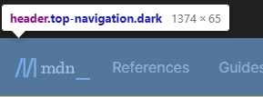
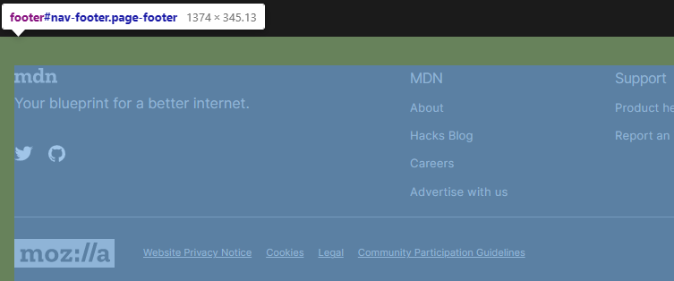
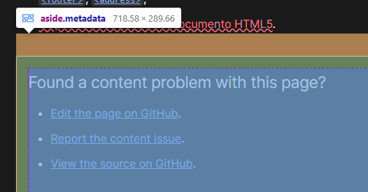
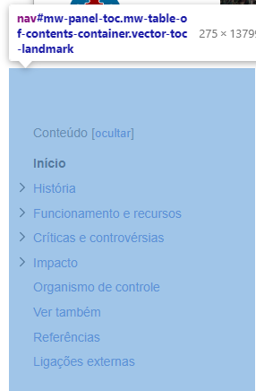

Segue abaixo algumas tags Estruturais e suas funções. Essas tags são usadas para criarem a estrutura do seu site, usando as tags abaixo junto com css você pode sar um visual melhor para seu site.
<header>
A tag <header> define um cabeçario, ele pode conter elementos de título, um logotipo, um formulário de pesquisa e outros elementos.
Na imagem, a tag é utilizada para definir a logotipo do site.
<main>A tag <main> define o principal conteúdo dentro da tag <body> em sua página. a tag deve ser unica na página e também não pode ser filho das tags <article>, <aside>, <footer>, <header> e <nav>.
Na página, a tag é usada no conteúdo principal.
<footer>A tag <footer> é usada para para criar o rodapé da sua página. O rodapé normalmente contém informações do autor da seção de dados, direitos autorais ou links de documentos relacionados.
Pode ser encontrado no lado inferior de páginas.
<section>Com a tag <section> podemos separar o conteúdo em seções, separando informações em áreas diferentes. O principal objetivo é retirar essa responsabilidade das tags. <div>.
Na imagem abaixo a tag <section> é usada em varias partes do site para separar e organizar todo conteúdo da pagina.
<article>A tag <article> do HTML é usada para indicar que um bloco de conteúdo em um documento HTML é uma seção independente e autônoma de informações.
Na página, a tag é usada em todo conteúdo relacionado na pesquisa.
<aside>A tag <aside> do HTML é usada para indicar um conteúdo que é secundário em relação ao conteúdo principal de uma página.
Na imagem abaixo a tag é usada para outro assunto relacionado a página, algo desconexo ao conteúdo original.
<nav>
A tag <nav> representa uma seção de uma página que aponta para outras páginas ou para outras áreas da página, ou seja, uma seção com links de navegação.
Na maioria das vezes pode ser encontrada na borda esquerda do site como uma lista de links.
<div>
A tag <div> é utilizada para alterar o estilo em partes específicas da página e posicionar objetos.
A tag pode <div> pode ser encontrada em grande parte de um site, sendo a tag de texto mais usada do html.